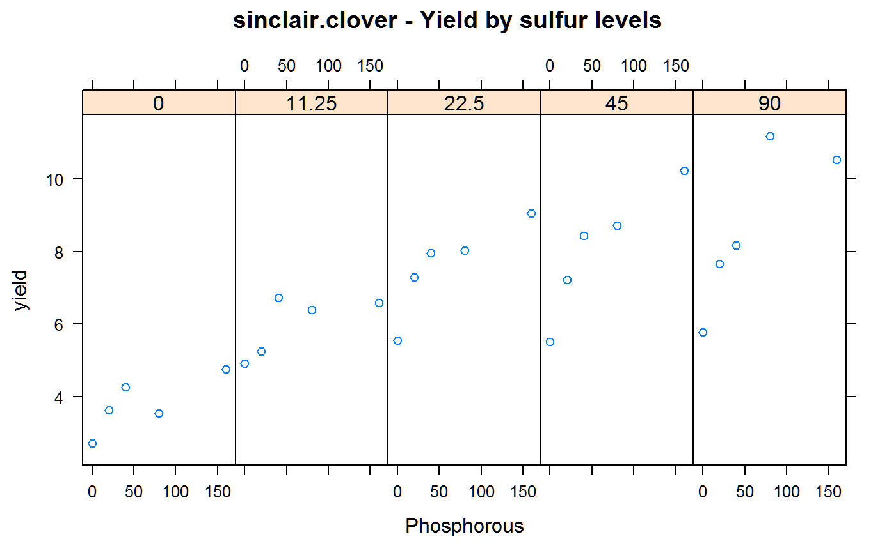

sinclair.clover.RdClover yields in a factorial fertilizer experiment
data("sinclair.clover")
A data frame with 25 observations on the following 3 variables.
yieldyield t/ha
Pphosphorous fertilizer kg/ha
Ssulfur fertilizer kg/ha
A phosphorous by sulfur factorial experiment at Dipton in Southland, New Zealand. There were 3 reps. Plots were harvested repeatedly from Dec 1992 to Mar 1994. Yields reported are the total dry matter across all cuttings.
Sinclair AG, Risk WH, Smith LC, Morrison JD & Dodds KG (1994) Sulphur and phosphorus in balanced pasture nutrition. Proc N Z Grass Assoc, 56, 13-16.
Dodds, KG and Sinclair, AG and Morrison, JD. (1995). A bivariate response surface for growth data. Fertilizer research, 45, 117-122. http://doi.org/10.1007/BF00790661
library(agridat) data(sinclair.clover) dat <- sinclair.clover libs(lattice) xyplot(yield~P|factor(S), dat, layout=c(5,1), main="sinclair.clover - Yield by sulfur levels", xlab="Phosphorous")# Dodds fits a two-dimensional Mitscherlich-like model: # z = a*(1+b*{(s+t*x)/(x+1)}^y) * (1+d*{(th+r*y)/(y+1)}^x) # First, re-scale the problem to a more stable part of the parameter space dat <- transform(dat, x=P/10, y=S/10) # Response value for (x=0, y=maximal), (x=maximal, y=0), (x=max, y=max) z0m <- 5 zm0 <- 5 zmm <- 10.5 # The parameters are somewhat sensitive to starting values. # I had to try a couple different initial values to match the paper by Dodds m1 <- nls(yield ~ alpha*(1 + beta*{(sig+tau*x)/(x+1)}^y) * (1 + del*{(th+rho*y)/(y+1)}^x), data=dat, # trace=TRUE, start=list(alpha=zmm, beta=(zm0/zmm)-1, del=(z0m/zmm)-1, sig=.51, tau=.6, th=.5, rho=.7)) summary(m1) # Match Dodds Table 2#> #> Formula: yield ~ alpha * (1 + beta * { #> (sig + tau * x)/(x + 1) #> }^y) * (1 + del * { #> (th + rho * y)/(y + 1) #> }^x) #> #> Parameters: #> Estimate Std. Error t value Pr(>|t|) #> alpha 11.15148 0.66484 16.773 1.96e-12 *** #> beta -0.61223 0.03759 -16.286 3.23e-12 *** #> del -0.48781 0.04046 -12.057 4.68e-10 *** #> sig 0.26783 0.16985 1.577 0.13224 #> tau 0.68030 0.06333 10.741 2.94e-09 *** #> th 0.59656 0.16716 3.569 0.00219 ** #> rho 0.83273 0.06204 13.421 8.16e-11 *** #> --- #> Signif. codes: 0 '***' 0.001 '**' 0.01 '*' 0.05 '.' 0.1 ' ' 1 #> #> Residual standard error: 0.5298 on 18 degrees of freedom #> #> Number of iterations to convergence: 7 #> Achieved convergence tolerance: 3.913e-06 #>## Parameters: ## Estimate Std. Error t value Pr(>|t|) ## alpha 11.15148 0.66484 16.773 1.96e-12 *** ## beta -0.61223 0.03759 -16.286 3.23e-12 *** ## del -0.48781 0.04046 -12.057 4.68e-10 *** ## sig 0.26783 0.16985 1.577 0.13224 ## tau 0.68030 0.06333 10.741 2.94e-09 *** ## th 0.59656 0.16716 3.569 0.00219 ** ## rho 0.83273 0.06204 13.421 8.16e-11 *** ## --- ## Signif. codes: 0 '***' 0.001 '**' 0.01 '*' 0.05 '.' 0.1 ' ' 1 ## Residual standard error: 0.5298 on 18 degrees of freedompred <- expand.grid(x=0:17, y=0:9) pred$z <- predict(m1, pred) # 3D plot of data with fitted surface. Matches Dodds figure 2. libs(rgl) bg3d(color = "white") clear3d() spheres3d(dat$x, dat$y, dat$yield, radius=.2, col = rep("navy", nrow(dat))) surface3d(seq(0, 17, by = 1), seq(0, 9, by = 1), pred$z, alpha=0.9, col="wheat", front="fill", back="fill") axes3d() title3d("sinclair.clover - yield","", xlab="Phosphorous/10", ylab="Sulfur/10", zlab="", line=3, cex=1.5) view3d(userMatrix=matrix(c(.7,.2,-.7,0, -.7,.2,-.6,0, 0,.9,.3,0, 0,0,0,1),ncol=4)) # snapshot3d(file, "png") rgl.close()